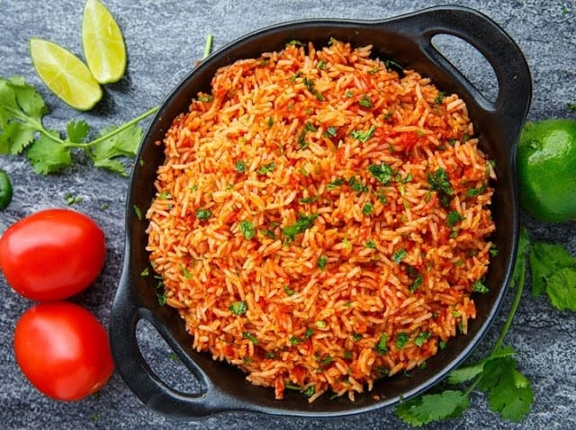

Cocinando por el mundo
Home
Acerca de
Contacto
Sucursales
Registrarse
Arroz mexicano

¡Auténtico arroz mexicano, todo un deleite para acompañar tus mejores comidas!
Ingredientes
Cant
Productos
8
tomates
1 cda
aceite vegetal
1
cebolla grande
1
arroz blanco grano largo
3/4 taza
caldo de pollo bajo en sodio
1/2 taza
agua al natural
1
zanahoria picada en cubos
A gusto
sal, comino y ajo
Consideraciones
Tiempo de elaboracion: 1 hs
Rendimiento: 10 porciones
Costo: $400